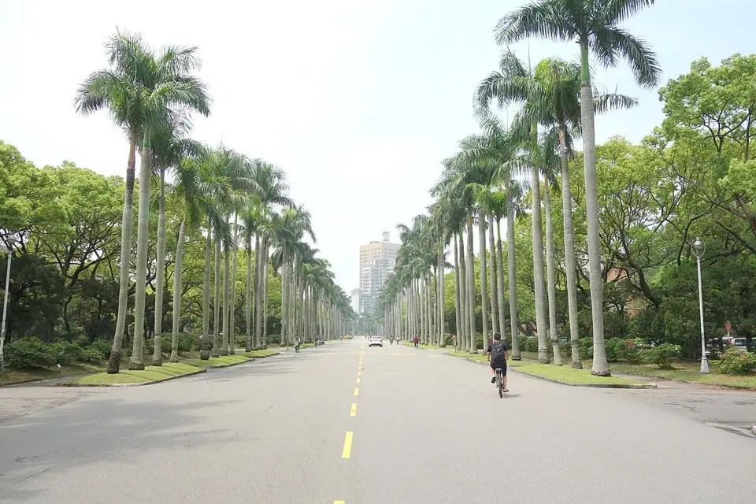
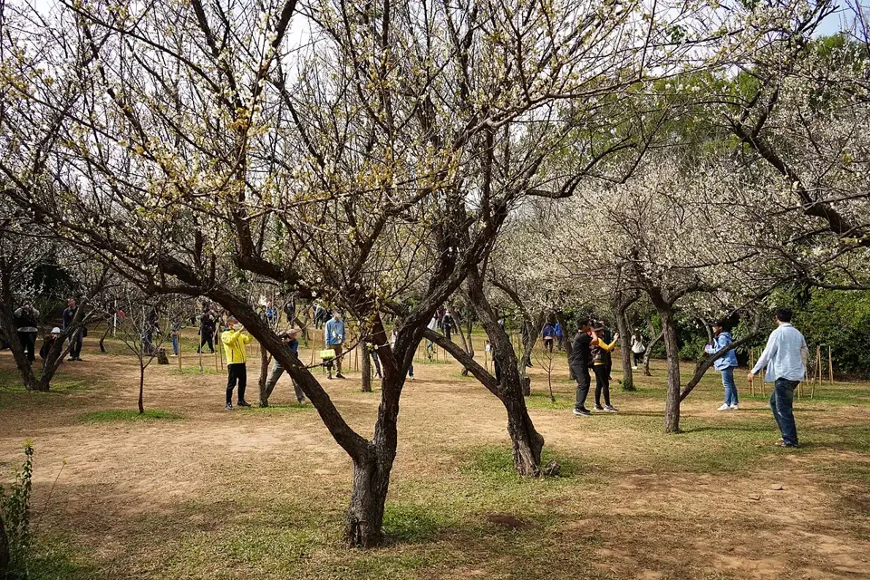
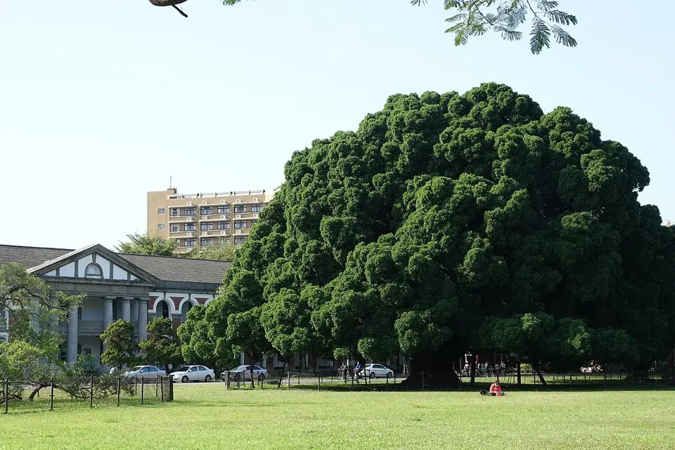

從熟悉的校園，走向你的下一站
把成績變成探索的起點，找到值得進一步了解的學校與科系。
輸入級分，直接看你的校系落點
選擇實際應考科目和級分，按「開始分析」後，先看接近的一階門檻與前後各五個校系，再檢視各科 ±1 級分情境。這是門檻對照，尚非志願分發結果。無須先指定學校或科系，也不用登入。
需要核對完整正式資格？使用甄選會的依級分查詢 ↗
目前這頁使用「申請入學」正式簡章與一階篩選資料：學測級分只能估一階位置，二階仍有書審、面試等校系指定項目。「分發入學」是另一條管道，依各系採計與加權、分科測驗成績及實際志願分發；只有學測級分時不能套用其最低錄取分數。查看考分會 115 年分發入學最低錄取標準 ↗
輸入學測級分
請選擇實際應考科目。未應考請保留「未應考」，不要填 0 級分。
填完所有實際應考科目再按開始分析；修改級分後須重新分析。
你的科目組合與校系
查看各科成績輪廓
自行搜尋校系
上方建議不需要預先選志願。你也可以在此搜尋指定學校或科系。參採科目不等於每科都設有檢定門檻；是否符合資格與通過第一階段，須再核對校系分則和篩選結果。
正在讀取校系資料…
想了解海外升學條件，也可以展開補充選項；各條路適不適合你，還要一起考慮興趣、英文與預算。
同樣在規劃大學，你也可以多看一條路
國內有值得考慮的校系；如果你還在想哪個科系適合自己，也可以一起看看海外大學或銜接課程的選擇。
多一個選擇，沒有哪條路一定比較好。真實案例與具名學校會在資料核實後加入。
補充你的升學選項
先用三個問題整理方向，不需要留下姓名或成績。選擇後再由你決定是否向 LTU 詢問。
海外學校的條件要依目標課程個別核對；目前不會顯示未驗證的錄取預測。
將開啟 LTU 官方 LINE；是否聯繫由你決定。
接下來怎麼選校系？
先核對校系採計科目、檢定與篩選方式，再比較課程內容及未來方向。查看官方申請入學資訊 · 查看大考中心 115 學年度統計與五標原表
資料與方法：115 學年度各科五標及級分分布依大考中心公告整理。申請入學校系目錄、檢定、倍率及招生名額依甄選會 115 學年度正式校系分則逐筆整理；資料覆蓋筆數會在結果上方顯示。科目相容、已達檢定、歷年一階過篩是三種不同判斷。一階過篩級分由甄選會圖片辨識，尚待人工逐筆複核，供公開試算參考；第二階段甄試、英聽與特殊條件仍須依官方校系分則核對。本站不提供錄取保證或機率。
校園照片來源與授權
- 臺大｜椰林大道｜Daderot｜CC0 1.0
- 清大｜梅園｜Rick888chen｜CC BY-SA 4.0
- 成大｜榕園｜國立成功大學｜政府網站資料開放宣告
- 師大附中｜至善樓｜玄史生｜CC BY-SA 3.0
照片僅縮圖壓縮，頁面以 CSS 裁切、遮罩呈現；各照片沿用原授權（CC BY-SA 照片的衍生圖亦依同一授權提供）。校園照片不代表學校推薦或與本站合作。